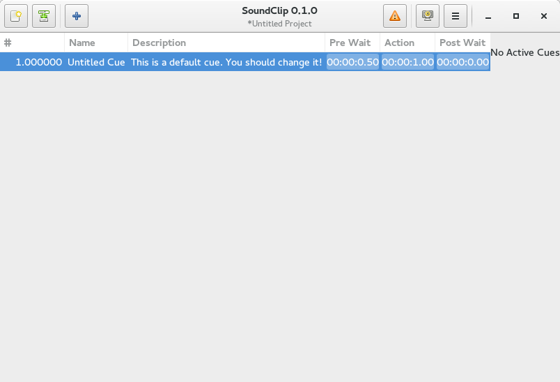

I need to have this project in an initial, useable state by the end of February. Between work and school, that’s not a lot of time. Worst case scenario, I miss the deadline and have to dual boot Windows to run Multiplay By February, I at least need:
- Basic Audio playback to two channels (stereo)
- Ability to fade cues in and out (Nothing fancy for now, just linear fades)
- Store cue names, numbers, and basic metadata (cue line, etc.)
- Display length of a cue and the time elapsed while it is playing
- Bonus: A list of all cues currently running
It doesn’t have to be fancy, but it must be reliable, I can’t have the application randomly stop playing or crashing on me in the middle of a show.
Also, I’d like to tidy the GUI up a bit. This is what it looks like now:

It doesn’t look nice when it resizes, I still have to figure out how to size widgets proportionally in GTK.
Version One
After the show at the end of march, I want to implement the following features by the end of the year:
- Grouped Cues
- More Automation (Pan, Pitch, Fade, etc.)
- Better curves for said automation
- A proper, professional looking theme (I don’t want to have to keep enabling the global dark theme in gnome so I’m not blinded during a show)
- VU Meters for running cues
- Solidify and Stabilize the overall project
I think that’s a reasonable goal to get done in a year. If I can do it, I want to try to have all that done by this November (May be helping with another show around then)
Beyond
I really want to add support for jack. This would naturally add support for more output on virtual channels or groups that can have their own automation properties, and even allow for the automation and mixing of live inputs.
I would also like to be able to add remote control support (dbus, midi, and/or osc) from other computers or tablets. I won’t be able to support iPads, as I don’t have a Mac to develop on, but if I design the api right, it should be trivial for another member of the community to develop one if the demand is great enough.
With remote control support, I want to add a master/slave sync/backup solution, so you don’t have to rely on one computer for the entire show. Perhaps this will lead to the decoupling of the playback engine and interface, but that may introduce a lot of latency. It’s still pretty far out, so I haven’t really thought too much on that topic yet.
Unlike QLab, I am not planning on supporting video or projection at the moment. I’ve never had to do anything complex with it, as I’ve only used it in one show. If the need comes, I’ll probably implement it as a separate application and then sync the two over midi or dbus. Eventually, I’d love to add support for custom cues. I’m trying to design with that in mind and plan ahead, so hopefully that shouldn’t be too terrible of a task to implement..